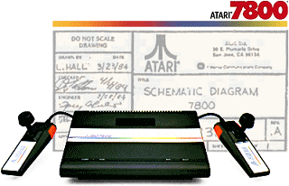
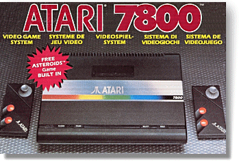

|

Atari needed to
make amends after the 5200. Times were changing in the industry, and
some companies were already feeling the pinch, including Atari Inc.
The next video game console which would replace the 5200 had to have all the
right ingredients, it had to ignite the consumers demand once again.
Taking no chances, Atari hired third-party marketing companies to canvas
games players everywhere, while the 5200 was still plodding along in the
stores, Atari were busy in 1983 plotting a come-back machine which
"everybody" would want.
In co-operation with GCC (General Computer
Corporation, now GCC Printers), Atari pushed for a new video game system,
with the emphasis on putting all the wrongs of the 5200 right, first time.
The 3600 as it was originally referred, was so important to Atari, that
development took precedence over the new 1400XL and 1450XLD computers.
To ensure the machine made it to market as
quickly as possible, the physical design of the machine was based on an
older product called the 2800 VCS. This was the Japanese/OEM version
of the 2600 unit, and it had a much more rounded design than the 5200's,
large, straight angled approach. The new 7800 video game system was
beginning to take shape, the new graphics processor ("Maria") was in testing
by late 1983, and 2600 compatibility was ensured from the beginning with the
addition of the original VCS "TIA" silicon on the motherboard.
Atari wanted a smaller, more refined video
console, with better controllers and no ugly adapters for 2600
compatibility. The valuable feedback from focus groups and dealers was
carefully taken into consideration, the new 7800 would be fully expandable,
and planned peripherals included a computer keyboard, Laser-Disc add-on,
a high-score cartridge and new improved joysticks.
With the specification of the new machine being
made available to the press early in 1984, video game magazines were
especially praising the new wonder machine from Atari, in fact, there was a
growing anticipation from the public about the immanent arrival of the
latest Atari console.
But 1984 wasn't a good year for Atari inc.
It was common knowledge that the company was loosing money, and Warner
Communications Inc. was being pulled down with it, by the savage decline in
video game sales. Warner management were talking to potential buyers,
and although Philips (the Dutch electronics giant) were supposedly one of
the closest bidders, it was Jack Tramiel, founder of Commodore Inc., that
would end up with the company.
The 7800 was not even on the agenda with the new
Atari management, in fact, video games were possibly the last things on
their mind. The 7800, 2600Jnr (a revised 2600 in smaller packaging),
and all current computer projects were axed - in fact, almost all Warner
projects were shelved when the Tramiels took over the company in July 1984.
The 7800 would languish in a mothballed state
for almost 2 years, until it became clear to the Tramiels that videogames
were selling again, and the Japanese companies were beginning to sow up the
U.S. and global video game markets. Perhaps cynically, the 7800 and
2600Jnr were showcased in the 1986 shares prospectus from Atari Corp. - The
Tramiels now pledged their support for video games, and to the markets
surprise, Atari were back selling video consoles again.

Although the 7800 had seen a very limited launch
before the buyout, you could still purchase the 2600VCS (and to a lesser
extent, the 5200) for some time after July 1984. Warner had
manufactured vast amounts of 2600 hardware and software (you can still buy
shrink-wrapped Warner 2600 titles today!) and it took some time before the
Atari Corp. had sold it all.
The 7800 sold well initially, and 1986/87 were
its best years. But the technology was already dated when Atari Corp.
launched the machine, and it was a half-hearted effort in the long-run.
Estimates of approx. $500,000 were made on the total global 7800 marketing
budget, this, in comparison to the spend for new systems from Sega and
Nintendo ensured the 7800 was at best, a well kept secret. The last
units of the 7800 were manufactured in 1990/91.
|